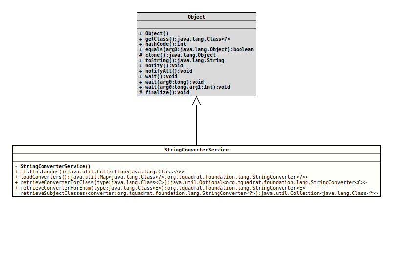

Module org.tquadrat.foundation.base
Class StringConverterService
java.lang.Object
org.tquadrat.foundation.lang.internal.StringConverterService
@ClassVersion(sourceVersion="$Id: StringConverterService.java 997 2022-01-26 14:55:05Z tquadrat $")
@API(status=INTERNAL,
since="0.1.0")
@UtilityClass
public final class StringConverterService
extends Object
The implementation for the
StringConverter
service methods.- Author:
- Thomas Thrien (thomas.thrien@tquadrat.org)
- Version:
- $Id: StringConverterService.java 997 2022-01-26 14:55:05Z tquadrat $
- Since:
- 0.1.0
- UML Diagram
-

UML Diagram for "org.tquadrat.foundation.lang.internal.StringConverterService"
{kind=link}
-
Constructor Summary
ConstructorsModifierConstructorDescriptionprivateNo instance allowed for this class. -
Method Summary
Modifier and TypeMethodDescriptionstatic final Collection<Class<?>>Returns the classes for that an instance ofStringConverteris registered,static final Map<Class<?>,StringConverter<?>> Loads the known instances ofStringConverter.static final <C> Optional<StringConverter<C>>retrieveConverterForClass(Class<C> type) Returns an instance ofStringConverterfor the givenClass.static final <E extends Enum<E>>
StringConverter<E>retrieveConverterForEnum(Class<E> type) Returns an instance ofStringConverterfor the givenEnumtype.private static final Collection<Class<?>>retrieveSubjectClasses(StringConverter<?> converter) Determines the key class for the given instance ofStringConverter.
-
Constructor Details
-
StringConverterService
private StringConverterService()No instance allowed for this class.
-
-
Method Details
-
listInstances
Returns the classes for that an instance ofStringConverteris registered,- Returns:
- The classes with a string converter.
-
loadConverters
@API(status=INTERNAL, since="0.1.0") public static final Map<Class<?>,StringConverter<?>> loadConverters()Loads the known instances ofStringConverter.- Returns:
- The registry with the converters.
-
retrieveConverterForClass
@API(status=INTERNAL, since="0.1.0") public static final <C> Optional<StringConverter<C>> retrieveConverterForClass(Class<C> type) Returns an instance ofStringConverterfor the givenClass. If there is no converter for the given type, or the type isnull, the return value isOptional.empty().- Type Parameters:
C- The class a converter is needed for.- Parameters:
type- The instance of the class a converter is needed for.- Returns:
- An instance of
Optionalthat holds the instance ofStringConverter.
-
retrieveConverterForEnum
@API(status=INTERNAL, since="0.1.0") public static final <E extends Enum<E>> StringConverter<E> retrieveConverterForEnum(Class<E> type) Returns an instance ofStringConverterfor the givenEnumtype. If there is no converter for the given type in the registry, a new instance ofStringConverterwill be created, on base ofDefaultEnumStringConverter.- Type Parameters:
E- The class a converter is needed for.- Parameters:
type- The instance of the class a converter is needed for.- Returns:
- The requested instance of
StringConverter.
-
retrieveSubjectClasses
Determines the key class for the given instance of
StringConverter.The subject class is the target type for a call to
fromString(), and usually this is also the type of the argument fortoString(T); but under some circumstances, it cannot be guessed correctly by reflection. For that case, some implementation ofStringConverterprovides an optional methodpublic Class<?> getSubjectClass()that returns the respective class.- Parameters:
converter- The converter instance.- Returns:
- The subject class.
-